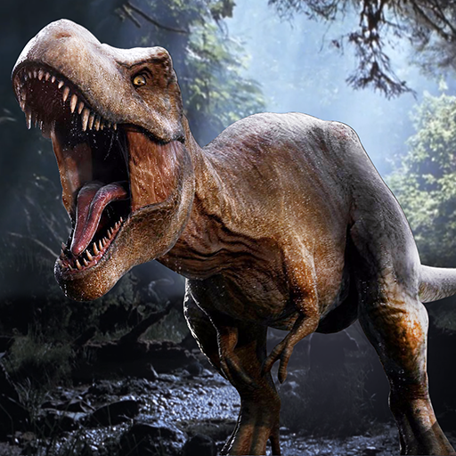

საუკეთესო დინოზავრები
- T-rex
- Velociraptor
- Triceratops
დინოზავრები (ლათ. Dinosauria) — მეზოზოური ნამარხი ქვეწარმავლების ზერიგი დიაპსიდების ქვეკლასისა. იყოფა 2 რიგად: ხვლიკმენჯა დინოზავრებად და ფრინველმენჯა დინოზავრებად. უძველესი დინოზავრები ცნობილია შუა ტრიასული პერიოდიდან. უკანასკნელი არაფრინველი წარმომადგენლები კი — ცარცული პერიოდის დამლევიდან. დღესდღეობით, დინოზავრთა ერთადერთი გადარჩენილი ჯგუფი ფრინველები არიან, რომლებიც დინოზავრების თეროპოდთა ჯგუფს მიეკუთნებიან. დინოზავრების წინაპრები იყვნენ პრიმიტიული ტრიასული არქოზავრები — თეკოდონტები. თავდაპირველად დინოზავრები ხმელეთზე ცხოვრობდნენ და მტაცებლები იყვნენ, მაგრამ ტრიასული პერიოდის დამლევს მათ გამოეყო პროზავროპოდები, რომლებიც როგორც ჩანს, ყველაფრის მჭამელნი იყვნენ. მათგან წარმოიშვნენ გიგანტური მცენარიჭამია ზავროპიდები, რომლებიც საცხოვრებლად გადავიდნენ დიდ კონტინენტურ წყალსატევებში ან ზღვის სანაპირო ზონაში. ტრიასულ პერიოდში გაჩნდნენ ჰეტეროდონტოზავრები, რომლებმაც შესაძლოა დასაბამი მისცეს ფრინველმენჯა დინოზავრებს. ზოგიერთ დინოზავრებს განუვითარდა სხვადასხვა წარმონაქმნი: ქაცები, ძვლოვანი ჯავშანი, რქები. დინოზავრები კვერცხით მრავლდებოდნენ. ფიქრობენ, რომ თბილსისხლიანი ცხოველები იყვნენ და მაღალი ფიზიოლოგიური ორგანიზაციის ნიშნები ჰქონდათ. დინოზავრები გადაშენდნენ მეზოზოურ და კაინოზოურ ერათა მიჯნაზე. გადაშენების ძირითადი მიზეზი იყო გარემოს გართულება და მკვეთრი შეცვლა. დინოზავრების ნაშთები დღემდე გვხვდება ყველა კონტინენტზე. საქართველოში ცარცული პერიოდის დინოზავრების გაქვავებული ნაკვალევი შემორჩენილია სათაფლიაში (ქუთაისის მახლობლად).
